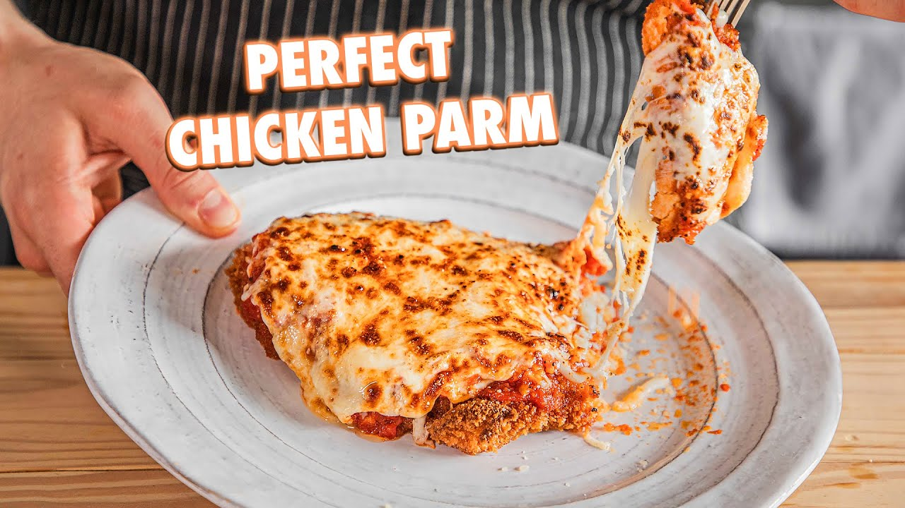

Homemade Chicken Parmesan

Description
We're making the cwispiest homemade chicken parmesan known to the world!
Ingredients:
For the SAUCE
- 3-4 slices thick-cut bacon or pancetta
- 40ml olive oil (2.5 Tbsp)
- 2 red Fresno or Thai chilies, sliced thin
- 2g red pepper flakes (1 tsp)
- 5 cloves garlic, thinly sliced
- 1 can of crushed tomatoes
- Salt and pepper to taste
- Pinch of sugar
- 1/2 bunch thyme
- 1/4 cup grated Parmigiano Reggiano
For the chickie
- 4 chicken breasts
- 300g flour
- 18g salt (1 Tbsp)
- Fresh cracked black pepper to taste
- 220g panko breadcrumbs
- 4 eggs plus a splash of water
- 270g mozzarella grated
- 70g Parmigiano Reggiano
Instructions
- Start by slicing thick-cut bacon or pancetta into ½" wide pieces and toss into a cold medium-size skillet. Place over medium heat and add olive oil. Stir often.
- Once the bacon becomes crispy or develops color, add in Fresno or Thai chiles, red pepper flakes, and garlic cloves. Continue cooking over medium heat until fragrant and toasted
- Scoop out all the solids but leave the oil behind. Place the solids on a cutting board and finely chop placing back into the pan and adding in San Marzano tomatoes. Season to taste with salt and pepper, and a pinch of sugar. Mix together and let it simmer for 15 minutes stirring occasionally. (Any crushing or breaking up of tomatoes?)
- While simmering, optionally add in thyme and Parmigiano Reggiano mixing to fully combine. After 15 minutes, pour into a bowl and set aside.
- For the chicken breasts, carefully cut in half but not all the way through. Place a piece of plastic wrap over the chicken flatten the chicken breasts until they are slightly thinner than ½”.
- In separate bowls, place panko bread crumbs, eggs and a splash of water (beaten together), and all-purpose flour with kosher salt and cracked black pepper (whisk together).
- Toss the chicken into the all-purpose flour, shaking the excess off, dipping to coat thoroughly in the egg wash, then drop into the panko bread crumbs and coat thoroughly while pressing into the chicken. Place to the side and repeat with the rest. (Dry hand, wet hand)
- In a large deep pan or 12” cast iron skillet, fill about halfway with high heat oil, heating over medium heat until it reaches 350℉.
- Slowly drop the chicken breast facing away into the oil fry on one side for 3-5 minutes until crispy golden brown, flip and fry for an additional 3-5 minutes. The internal temperature should be 165℉. Place on a wire rack in a rimmed baking sheet to cool. Rinse and repeat.
- After the chicken is fried, grated mozzarella cheese and Parmigiano Reggiano then place in a large bowl and toss to mix.
- Place the crispy chicken pieces on a foil-lined baking sheet, cover each piece generously with the sauce and generously with the cheese mixture.
- Place into a broiler for 5-8 minutes or until everything is completely melted or the cheese is a golden brown.
- Plate and enjoy.